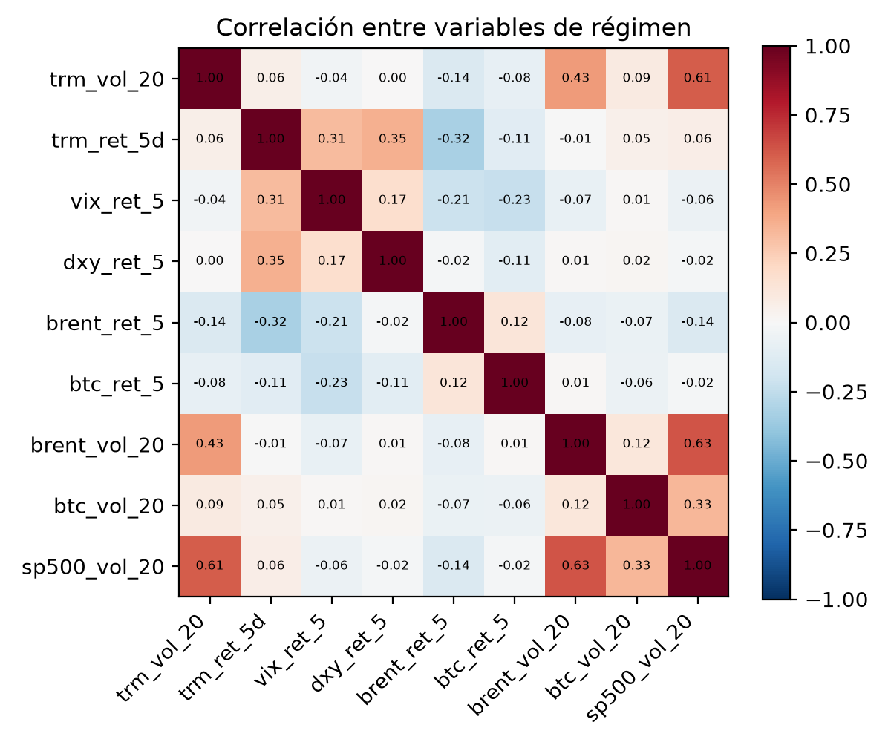
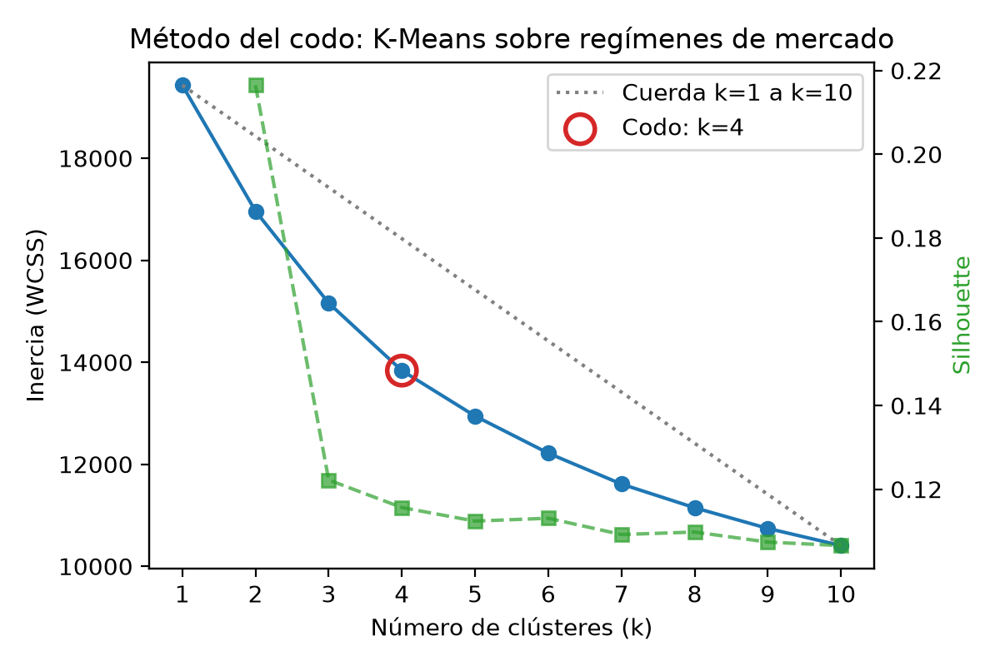
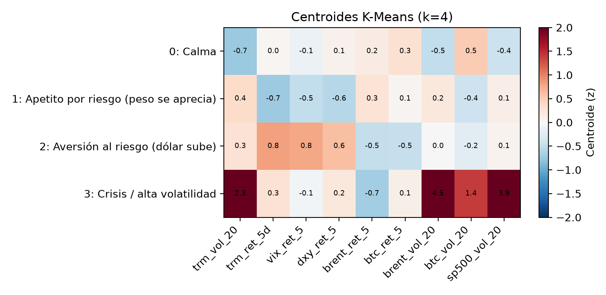
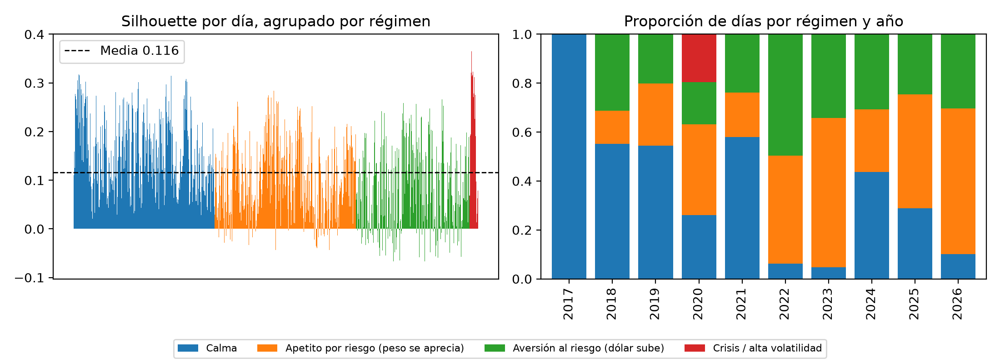
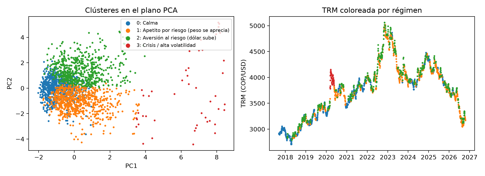

Proyecto integrador V semestre · Universidad Santo Tomás Tunja · Regímenes del mercado cambiario COP/USD
Código: src/pipeline/elbow.py (elección de k) y src/pipeline/kmeans_validation.py (validación). Resultados en reports/.
Objetivo analítico. Segmentar los días de mercado en regímenes, es decir, en estados del entorno financiero que se comportan parecido: volatilidad de la TRM, su tendencia a 5 días y lo que hacen sus referentes (VIX, índice dólar DXY, Brent, Bitcoin y S&P 500).
Cómo genera valor. Una empresa con exposición al dólar (importador, exportador, tesorería) no decide igual en calma que en crisis. Saber en qué régimen está el mercado hoy indica cuánto cubrirse, con qué instrumento y qué tan confiable es el pronóstico del modelo predictivo del proyecto.
Por qué K-Means (no supervisado). Nadie etiqueta los días como «crisis» o «calma»: no existe una variable objetivo para entrenar un clasificador. Los regímenes deben descubrirse en los datos. K-Means es simple, rápido con 2.159 observaciones, sus centroides se leen directamente como «el día típico» de cada régimen y permite asignar un día nuevo al régimen más cercano, que es lo que necesita la aplicación en la nube.
Datos. 2.159 días hábiles entre el 7-sep-2017 y el 17-oct-2026 (TRM oficial + mercados de Yahoo Finance).
| Usadas (9) | Descartadas y por qué |
|---|---|
trm_vol_20, trm_ret_5d, vix_ret_5, dxy_ret_5, brent_ret_5, btc_ret_5, brent_vol_20, btc_vol_20, sp500_vol_20 |
Fecha (identificador); nivel de la TRM (no estacionario: agruparía por época, no por comportamiento); y_ret/y_up (lo que se quiere predecir: usarlas sería fuga de información); día de la semana y mes (calendario, no mercado); USD/MXN, USD/BRL, tasas a 10 años y el spot COP (se reservan como variables externas para validar en la Fase 5). |
Las volatilidades rondan 0,005–0,08 y los retornos del VIX llegan a ±0,3. Como K-Means usa distancia euclidiana, se aplica StandardScaler (media 0, varianza 1) para que todas pesen igual.

Se entrenó K-Means con k = 1…10. El codo se ubica de forma objetiva con el criterio de máxima distancia a la cuerda (idea del algoritmo Kneedle) y da k = 4.
| k | Inercia | Caída de inercia | Silhouette | Davies-Bouldin ↓ | Calinski-Harabasz ↑ |
|---|---|---|---|---|---|
| 2 | 16.963 | 12,7 % | 0,217 | 2,27 | 314 |
| 3 | 15.160 | 10,6 % | 0,122 | 2,08 | 304 |
| 4 | 13.836 | 8,7 % | 0,116 | 1,91 | 291 |
| 5 | 12.945 | 6,4 % | 0,112 | 1,88 | 270 |
| 6 | 12.217 | 5,6 % | 0,113 | 1,80 | 254 |

KMeans(n_clusters=4, init="k-means++", n_init=10, random_state=42). k-means++ separa los centroides iniciales y se toman 10 arranques, de los que queda el de menor inercia.scaler.inverse_transform (reports/kmeans_centroides_originales.csv).| Régimen | Vol. TRM 20 d | TRM 5 d | VIX 5 d | DXY 5 d | Brent 5 d | BTC 5 d | Vol. Brent | Vol. BTC | Vol. S&P |
|---|---|---|---|---|---|---|---|---|---|
| 0 · Calma | 0,57 % | +0,08 % | −1,7 % | +0,10 % | +1,1 % | +2,9 % | 1,6 % | 3,9 % | 0,73 % |
| 1 · Apetito por riesgo | 0,85 % | −1,39 % | −7,3 % | −0,47 % | +1,6 % | +1,0 % | 2,5 % | 2,5 % | 1,05 % |
| 2 · Aversión al riesgo | 0,83 % | +1,60 % | +11,7 % | +0,55 % | −2,3 % | −2,9 % | 2,2 % | 2,8 % | 1,01 % |
| 3 · Crisis | 1,34 % | +0,57 % | −0,7 % | +0,20 % | −3,5 % | +1,4 % | 8,2 % | 5,1 % | 3,11 % |

| Prueba | Resultado | Lectura |
|---|---|---|
| Silhouette global | 0,116 | Baja, pero por encima de unos datos con las mismas variables barajadas (sin estructura conjunta). Los regímenes de mercado son un continuo (de la calma se pasa poco a poco al estrés), así que no hay fronteras nítidas: la cohesión es moderada. |
| Silhouette con datos barajados | 0,099 | |
| Silhouette por clúster | Crisis 0,20 · Calma 0,15 · Apetito 0,10 · Aversión 0,08 | Crisis y Calma son los grupos más claros y no tienen días mal asignados (0 % de silhouette negativa). Aversión al riesgo es el más difuso (21 % negativos): comparte frontera con los demás. |
| Estabilidad con 20 semillas (ARI) | media 0,93 · mín 0,65 | Casi siempre aparece la misma partición: los grupos no son un accidente de la inicialización. |
| Bootstrap (entrenar con el 80 %) | ARI media 0,81 | Con otra muestra de días, la asignación se mantiene en su mayoría. |
| Persistencia (probabilidad de seguir en el régimen al día siguiente) | Calma 0,85 · Apetito 0,82 · Aversión 0,74 · Crisis 0,98 | El régimen dura varios días (3,9 a 47 en promedio). K-Means no recibió la fecha, así que esta continuidad en el tiempo es una señal de que capta estados reales del mercado. |
| Variable externa | Calma | Apetito | Aversión | Crisis | Prueba |
|---|---|---|---|---|---|
| % días en que la TRM sube al día siguiente | 50,8 % | 43,8 % | 51,3 % | 42,6 % | χ² = 10,9 · p = 0,012 |
| Movimiento absoluto de la TRM al día siguiente | 0,49 % | 0,63 % | 0,69 % | 1,10 % | Kruskal-Wallis · p < 10⁻¹² |
| USD/MXN a 5 días | 0,0 % | −0,7 % | +0,8 % | +2,2 % | Los pares emergentes se mueven igual que el peso colombiano en cada régimen |
| USD/BRL a 5 días | +0,2 % | −0,8 % | +0,9 % | +2,8 % | |
| Tasa del Tesoro a 10 años, 5 días | +0,7 % | +0,2 % | −0,1 % | −4,2 % | En la crisis los inversionistas se refugian en bonos |
| Día de la semana | Sin diferencia | χ² = 5,5 · p = 0,94 | |||


| Régimen | % días | Perfil | Acción sugerida |
|---|---|---|---|
| Calma | 34,8 % | La TRM y el resto de mercados se mueven poco; el VIX baja levemente. Al día siguiente la TRM se mueve 0,49 % en promedio. | Mantener la cobertura base (forwards a 30–90 días según los pagos esperados). Es buen momento para comprar opciones, porque la volatilidad está barata. |
| Apetito por riesgo (el peso se aprecia) | 34,9 % | El VIX cae 7 %, el dólar global se debilita y la TRM baja 1,4 % en 5 días. Es el régimen en que la TRM menos sube al día siguiente (43,8 %). | Importadores: adelantar compras de dólares y ampliar la cobertura. Exportadores: esperar para monetizar, porque el peso fuerte suele revertir. |
| Aversión al riesgo (el dólar sube) | 28,1 % | El VIX sube 12 %, caen el petróleo y Bitcoin y la TRM sube 1,6 % en 5 días. El MXN y el BRL se debilitan a la vez. | Exportadores: vender dólares a plazo y asegurar la tasa alta. Importadores: no perseguir el alza; escalonar las compras. |
| Crisis / alta volatilidad | 2,2 % | La volatilidad de todos los mercados se multiplica (Brent 8 %, S&P 3 %). La TRM se mueve 1,1 % diario. Dura semanas. | Reducir la exposición abierta, llevar la cobertura al máximo de la política y ampliar los límites de pérdida. El pronóstico del modelo es menos confiable en este régimen. |
El último día de la muestra (17-oct-2026) quedó en Apetito por riesgo. Como trabajo futuro, la API en AWS puede asignar el régimen del día con el mismo escalador y los mismos centroides, para mostrarlo junto al pronóstico de la TRM.